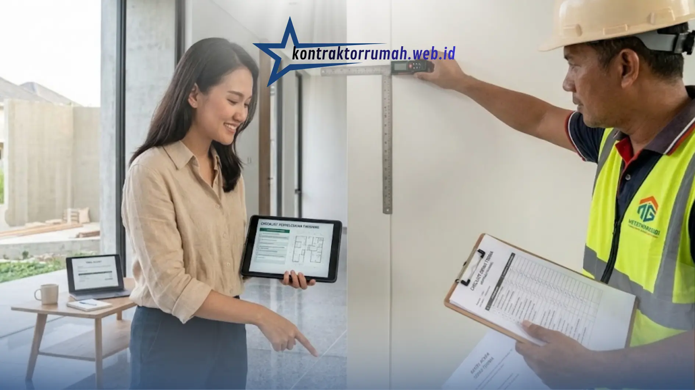

Rumah minimalis mengedepankan prinsip less is more. Ruang, cahaya, dan sirkulasi udara harus diperhitungkan matang, dan hampir tidak ada ornamen untuk menutupi kekurangan.
Dinding yang tidak lurus, nat keramik yang tidak rata, atau sambungan plafon yang kasar langsung terlihat. Karena itu, memilih kontraktor rumah minimalis yang tepat sangat menentukan hasil akhirnya. Berikut panduan yang perlu Anda siapkan sebelum menandatangani kontrak.
Poin Penting
- Pilih kontraktor dengan portofolio relevan gaya minimalis, bukan sekadar yang termurah.
- Kunci konsep dan material sejak awal karena rumah minimalis mengandalkan finishing presisi.
- Bedah RAB secara detail: merek cat, spesifikasi besi, jenis lantai, hingga harga satuan.
- Bayar secara bertahap sesuai progres, tahan sebagian hingga serah terima selesai.
- Pastikan ada garansi masa pemeliharaan dan kejelasan siapa yang mengurus PBG.
1. Pastikan Portofolionya Relevan
Jangan hanya mencari yang termurah. Pilih kontraktor yang punya rekam jejak membangun rumah bergaya minimalis. Minta foto hasil kerja dan, bila memungkinkan, kunjungi rumah yang pernah mereka bangun. Perhatikan cara mereka mengolah tata letak open space, pencahayaan alami, dan kerapian finishing.
2. Kunci Konsep dan Material Sejak Awal
Rumah minimalis sering memakai material yang dibiarkan terlihat, seperti beton ekspos, kayu, kaca, dan cat polos. Diskusikan jenis material ini dengan kontraktor dan pastikan tim mereka terbiasa mengerjakan finishing yang presisi, karena tidak ada dekorasi untuk menutupi cacat pengerjaan.

Kerapian nat keramik, sudut dinding, dan sambungan plafon jadi indikator utama kualitas kerja kontraktor rumah minimalis.
3. Bedah Rencana Anggaran Biaya (RAB)
RAB yang baik dari kontraktor profesional bersifat transparan. Periksa detail berikut:
| Item | Yang Perlu Diperiksa |
|---|---|
| Cat | Merek dan tipe cat yang dipakai |
| Besi | Spesifikasi dan ukuran besi |
| Lantai | Jenis lantai (granit, keramik, atau vinyl) |
| Volume & Harga | Volume dan harga satuan tiap pekerjaan |
Bandingkan minimal 2-3 penawaran dan pastikan semua rincian sesuai desain awal.
4. Buat Timeline yang Jelas
Minta jadwal pengerjaan mingguan. Sepakati denda keterlambatan yang wajar jika proyek molor tanpa alasan kuat, dengan pengecualian untuk kondisi di luar kendali seperti cuaca ekstrem.
5. Atur Termin Pembayaran
Bayar secara bertahap sesuai progres pekerjaan, bukan lunas di awal. Tahan sebagian kecil pembayaran sampai serah terima dan pemeriksaan akhir selesai.
6. Tanyakan Garansi dan Masa Pemeliharaan
Pastikan ada masa perbaikan gratis setelah serah terima, misalnya untuk retak rambut, kebocoran, atau finishing yang mengelupas. Tuliskan durasi dan cakupannya dalam kontrak.
7. Periksa Aspek Legalitas
Tanyakan pengalaman kontraktor dalam mengurus PBG (Persetujuan Bangunan Gedung) dan tegaskan siapa yang bertanggung jawab atas pengurusannya di dalam kontrak.
FAQ Seputar Kontraktor Rumah Minimalis
Waktu yang Anda investasikan di tahap perencanaan akan terbayar saat pembangunan berjalan. Hubungan kerja yang transparan, komunikatif, dan tertulis hitam di atas putih membantu rumah minimalis impian Anda terbangun kokoh, rapi, dan sesuai anggaran. Jika butuh pendamping tepercaya, tim jasa kontraktor rumah Kontraktor Rumah siap membantu dari perencanaan hingga serah terima.